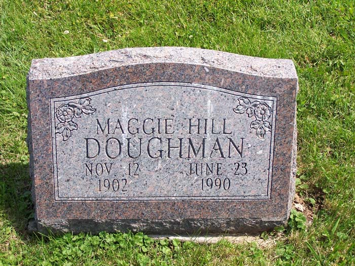
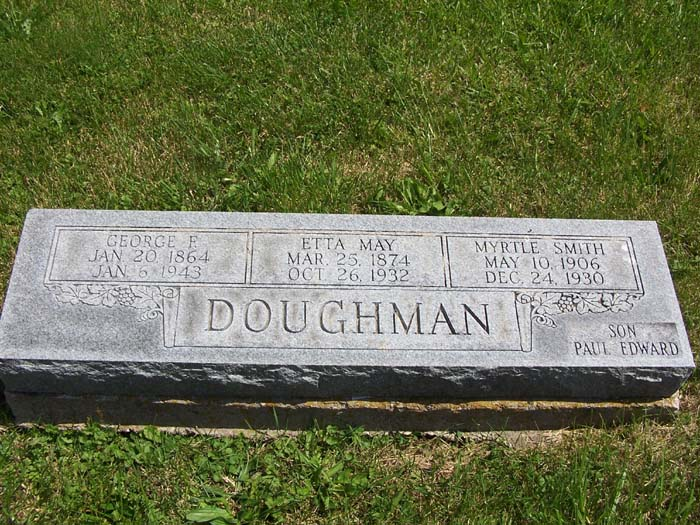
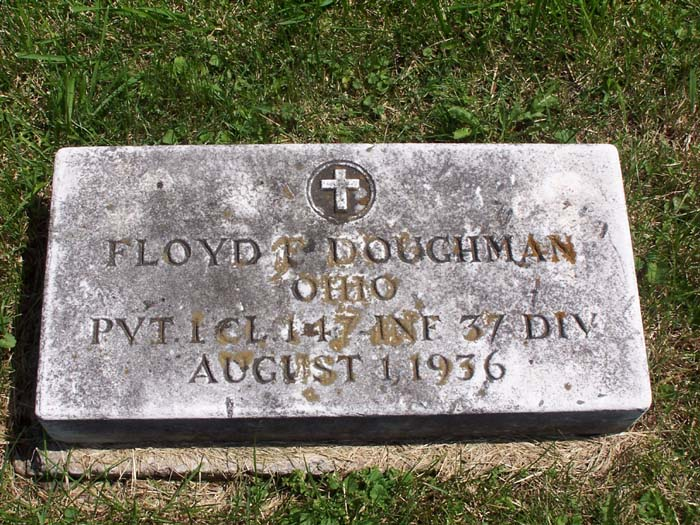
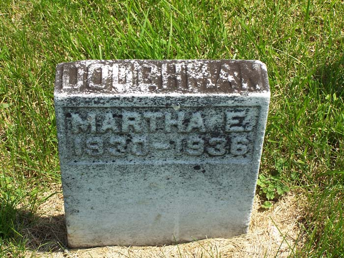

27 September 1898 · Birth · age 0 Born in South Lebanon, Warren County, Ohio, according to his inscribed headstone and Warren County birth-register index.
30 March 1917 · National Guard enlistment · age 18 Enlisted at Blanchester, Ohio, in Company B, 1st Ohio National Guard, alongside Floyd and Stanley Doughman.
22 June 1918–1919 · World War I service · age 19–20 Transport records place him overseas with the 147th Infantry, 37th Division. His service record identifies him as a wagoner. The 1918 outbound passenger list gives 22 June as the sailing date.
By 1921 · Marriage and family · about age 22–23 He and Maggie Hill were married by the time their first known son, Charles, was born in 1921. The marriage date and place have not been located.
1921 · Son Charles born · about age 22–23 His son Charles Virgil Doughman was born.
1926 · Son Donald born · age about 27–28 His son Donald Edward Doughman was born.
3 May 1930 · Twin daughters reported born · age 31 Doris and Dorothy are reported as twins born on this date; the date is retained as reported and should be checked against their original birth records.
28 November 1936 · Son Howard born · age 38 His son Howard Eugene Doughman was born.
April 1940 · Wayne Township household · age 41 The census enumerated Virgil, Maggie, and their children in Wayne Township, Clermont County, Ohio.
24 May 1941 · Death · age 42 Died and was buried at West Woodville Cemetery, Clermont County, Ohio.
Life Story
Virgil W. Doughman was born in South Lebanon, Ohio, on 27 September 1898 , the son of George F. and Etta May Doughman . In World War I he served as a wagoner with the 147th Infantry of the 37th "Buckeye" Division . He married Maggie Hill, and by 1940 they were raising a large family in Wayne Township, Clermont County . He died on 24 May 1941, at 42, leaving Maggie with young children, and is buried in West Woodville Cemetery .
Photo Gallery
Virgil’s military headstone reads his name, Ohio, Wagoner 147 Inf. 37 Div., and 27 September 1898–24 May 1941. Photograph by Cheryl Jordan, 28 December 2006; West Woodville Cemetery photo index.

Headstone of wife Maggie Hill Doughman (12 November 1902–23 June 1990), the companion entry in the cemetery photo index. Photograph by Cheryl Jordan, 28 December 2006.

Family marker naming George F. Doughman, Etta May Doughman, and Myrtle Doughman Smith. Included as family context; it does not itself name Virgil. Photograph by Cheryl Jordan, 29 December 2006.

Floyd F. Doughman veteran marker, listed nearby in the cemetery photograph index. The shared surname and cemetery do not alone prove his relationship to Virgil. Photograph by Cheryl Jordan, 29 December 2006.

Martha E. Doughman marker (1930–1936), a possible additional child noted as a lead only. Photograph by Cheryl Jordan, 29 December 2006.
1940 U.S. census, Wayne Township, Clermont County, Ohio: Virgil 42, Maggie 37, Charles 18, Alice Mae 16, Donald 13, Doris 9, Dorothy 9, Howard 3, and a younger daughter.
Obituary of Howard Eugene Doughman (28 November 1936 – 27 August 2018), Evans Funeral Home: "the son of Virgil and Maggie (nee Hill) Doughman"; survived by two sisters, one of them Doris McShane.
Find a Grave memorial 45758707, Virgil W. Doughman (27 September 1898 – 24 May 1941), West Woodville Cemetery; Wagoner, 147th Infantry, 37th Division, World War I.
Find a Grave memorial 153216615, Maggie (Hill) Doughman (12 November 1902 – 23 June 1990), West Woodville Cemetery.
Obituary of Alice Mae (Doughman) Montgomery, died 12 May 2015, Frederick Funeral Home, Cincinnati: sister of Donald, Charles, Howard, Doris McShane, and Dorothy Campbell.
Warren County, Ohio, Probate Birth Register, Vol. 3, p. 41 (Warren County Genealogical Society index): "Doughman | Wm. Virgil Harley Dewey | 1898 | 41 | Doughman, George F. | Doughman, Etta May."
Ohio World War I service record: Virgil Doughman enlisted at Blanchester, 30 March 1917, born Warren County, Ohio, Company B, 1st Ohio National Guard (later Company L, 147th Infantry); Floyd F. and Stanley M. Doughman served in the same company.
Family stone of George F. Doughman (20 January 1864 – 6 January 1943), Etta May Doughman (25 March 1874 – 26 October 1932), and Myrtle, West Woodville Cemetery, Clermont County, Ohio; Virgil, Floyd F., Maggie, and Martha E. are buried in the same section.
U.S. Army WWI Transport Service passenger lists, 1918–1919: outgoing, 22 Jun 1918, Pvt. Virgil W. Doughman, service no. 1527103, of Pleasant Plain, Ohio, next of kin his mother Ettie Doughman (Fold3 sub-image 621523481); incoming, Wagoner, Supply Company, 147th Infantry, service no. 1527103, of Pleasant Plain, next of kin his father George Doughman (Fold3 sub-image 628162325); Ohio Adjutant General WWI record (Fold3 sub-image 642647742). Images in his Drive folder.
FamilySearch public shared-tree profile for William Virgil Harley Dewey Doughman (ID L677-3CX) lists Stanley, Floyd, Myrtle, and Lola as siblings. Lola’s linked profile cites a 1920 census household, but neither the original image nor a stand-alone indexed household record was independently reviewed here. Treat Lola as UNPROVED, not established. The same shared-tree timeline names Mamie Doughman (1913–1978) and Leona Marjorie Doughman (1916–1996), but their parentage was not independently verified.
Ancestry.com, Public Member Photos & Scanned Documents, Doughman search results: an indexed item captioned “WW1 Stanley Millard Doughman Virgil Doughman Frank Doughman” is attached to public entries for Stanley Millard, William Virgil, and Floyd Frank Doughman. The result page exposed the caption but not the photo image or provenance; identity/contents remain unverified.
Research Notes and Open Questions
His full name in the Warren County birth register is Wm. Virgil Harley Dewey Doughman. The full register page ($1 from the Warren County Genealogical Society) may give his exact birth date and birthplace.
Martha E. Doughman (1930–1936), buried in the same cemetery, may be another child (lead only).
Marriage to Maggie Hill: date and place not yet found.
No verified portrait found in the couple Drive folders or accessible public memorials as of 21 November 2026. The folders contain cemetery/headstone and military-record images; an Ancestry public-photo search indexes a possible WWI group photo naming Stanley Millard, Virgil, and Frank/Floyd Doughman, but the image itself was not accessible for identification. Do not use it as Virgil’s portrait without direct inspection.
DNA
No DNA matches linked yet.
Family Notes
No family-notes link is listed on this profile.
Profile history: Created 11 November 2026; updated 15 November 2026 with credited West Woodville Cemetery photographs and headstone profile image.